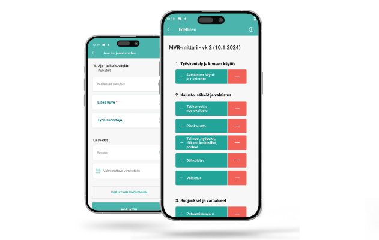
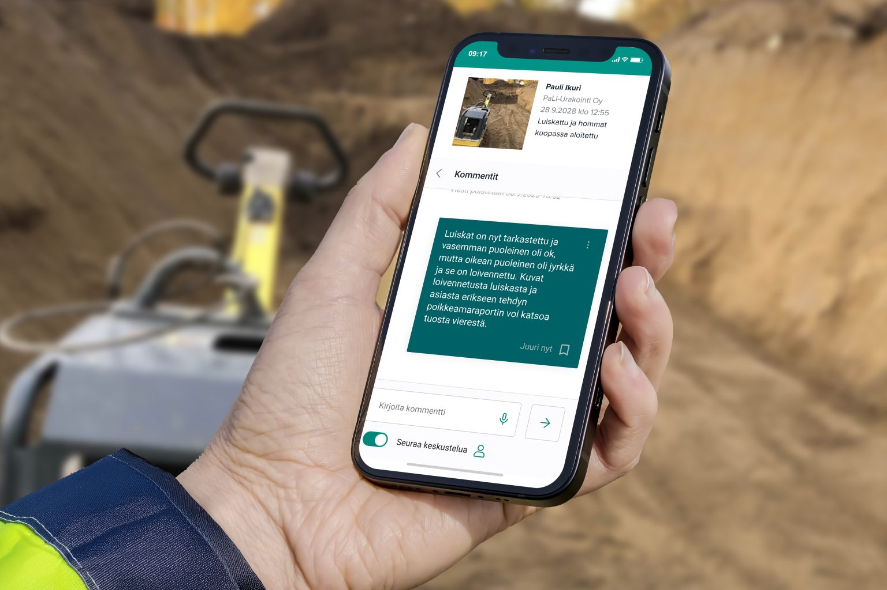
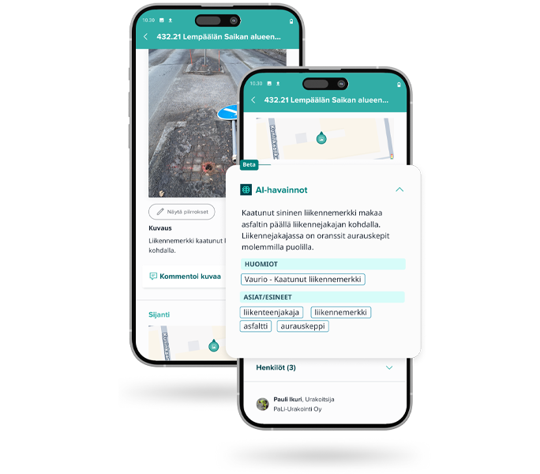
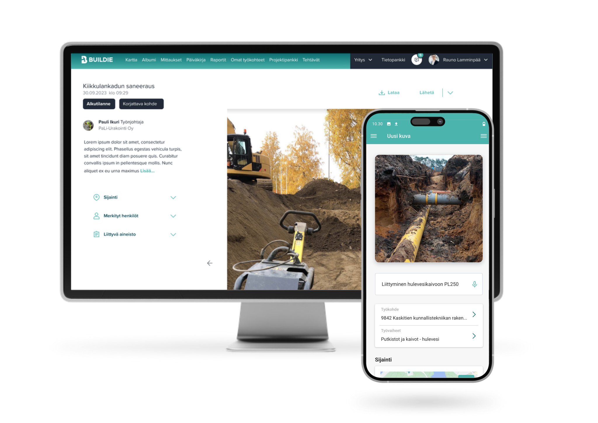
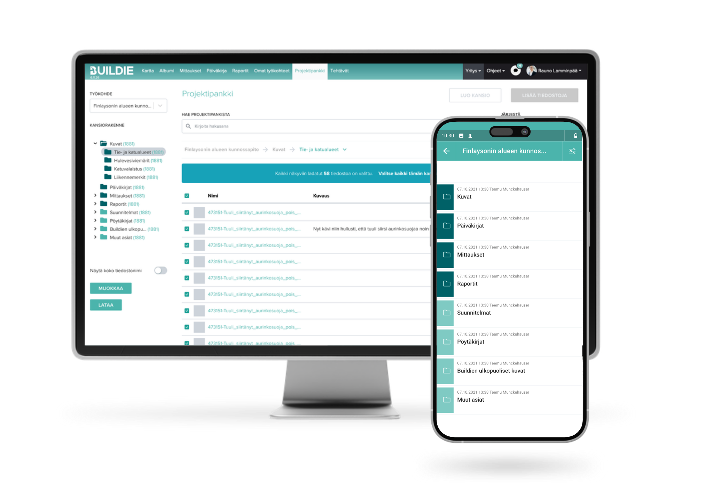

Vastaan useista tuotekokonaisuuksista ideoinnista julkaisuun. Mukana laajoja kenttätutkimuksia kehityksen pohjana.
Näissä projekteissa olen vastannut liiketoiminnallisesta arvosta, kehitystarpeiden määrittelystä ja toteutuksen ohjaamisesta.

TurvallisuusTäysin uudistettu digitaalinen turvallisuustarkastustyökalu infrarakentamiseen — läpinäkyvyys, vertailtavuus ja väärinkäytösten esto ensimmäistä kertaa. Mittaushistoria paljastaa nyt jos mittauksia tehdään pikakelaten tai väärässä paikassa.
Julkaistiin ensin mobiilisovellus, dashboard myöhemmässä vaiheessa — datankeruu mahdollistettiin kuitenkin alusta asti, mikä antoi lisäaikaa dashboardin kehitykseen pilotoinnin kärsimättä. Lanseeraus täytti johdon myyntitavoitteet ensimmäisen vuoden aikana ja synnytti puhujapyyntöjä toimialan järjestöiltä.

Kommunikaatio@-maininnoin ja push-notifikaatioilla toimiva kommunikaatiotyökalu suoraan valokuviin. Tarkennusten pyytäminen ja vahvistaminen ilman erillistä tehtävänhallintaa — kaikki tallennettu ja löydettävissä.
Suunniteltu tarkoituksella kevyeksi ilman tehtävien eteenpäinohjausta, jotta ei kanibalisoinut Tehtävät-ominaisuuden arvonluontia. Pilotointivuoden käytetyin uusi kommunikaatioominaisuus, levisi orgaanisesti lähes kaikkiin asiakasyrityksiin.

TekoälyEnsimmäinen tuotantoon viety tekoälyominaisuus. AI kategorisoi valokuvia automaattisesti ja kirjaa havaintoja — vähentää inhimillisiä virheitä ja auttaa hallitsemaan suuria materiaalimääriä työmailla.
Aloitimme objektien tunnistuksesta tarkan AI-analyysin sijaan, jotta teknologiaa pystyttiin kokeilemaan matalalla kynnyksellä ja asiakkaita osallistamaan kehitykseen konkretian tasolla. Kehitys valmistui johtoryhmän asettamassa aikataulussa.

ValokuvausTäysin uusi kameraflow karttapohjaisena. Erillinen sarjakuvausmoodi poistettiin ja kuvaus yhdistettiin yhteen virtaviivaiseen tapaan — kenttäkäytössä todettiin sarjakuvauksen olevan työmaaolosuhteissa liian raskas. Yhtenäinen ratkaisu helpottaa uusien käyttäjien oppimista ja skaalautuu paremmin erilaisiin käyttötapauksiin.
Kenttätutkimus viidellä työmaakäynnillä eri puolilla Suomea — noin kymmenen haastateltavaa eri asiakassegmenteistä yhdessä UX-suunnittelijan kanssa. Uusi ominaisuus kehitykseen valmiina kahden kuukauden sisällä tutkimuksen aloituksesta.

AI · ProjektipankkiProjektipankin tiedostoversioiden automaattinen vertailu tekoälyn avulla. Tekstitiedostoille kirjallinen yhteenveto, suunnitelmakuville visuaalinen korostus eroavista kohdista.
Aloitamme tekstipohjaisesta vertailusta, koska LLM-mallit ovat tekstillä luotettavampia — kuvavertailussa nojataan pikseleihin, ei AI-tulkintaan. Idea asiakaspalautteesta product speciksi kolmen kuukauden sisällä, pilotointi käynnistyy Q2/2026.
Hyvä tuotekehitys alkaa oikeasta asiakasymmärryksestä. Olen toteuttanut useita tutkimuksia, jotka ovat suoraan vaikuttaneet kehityssuuntaan.
Laaja kenttätutkimus valokuvauksen nykytilasta. Viisi työmaakäyntiä eri puolilla Suomea, noin kymmenen haastateltavaa neljästä asiakassegmentistä — valvojat, kunnossapidon työntekijät, asentajat ja lupa-asioita hoitavat. Tutkimus johti suoraan Photography 2.0 -projektin käynnistämiseen.
Tutkimus suunnitelmakuvien hyödyntämisestä karttakerroksena. Kartoitin asiakastarpeen, jonka pohjalta kehitettiin ominaisuus, joka mahdollistaa ajantasaisen työmaakartan suunnitelmakuvien avulla. Parantaa GPS-sijaintien tarkkuutta ja helpottaa navigointia.